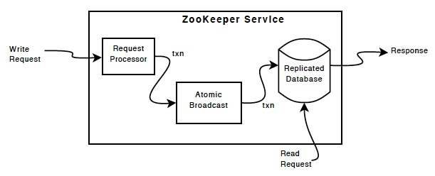

Coordenação: Zookeeper
O Zookeeper foi criado para coordenar as ações dos componentes de sistemas distribuídos, porquê sistemas distribuídos são como zoológicos, com animais de diversas espécies, sendo obrigados a conviver de forma anti-natural.

Visão Geral
O quê?
ZooKeeper is a centralized service for maintaining configuration information, naming, providing distributed synchronization, and providing group services. All of these kinds of services are used in some form or another by distributed applications. Each time they are implemented there is a lot of work that goes into fixing the bugs and race conditions that are inevitable. Because of the difficulty of implementing these kinds of services, applications initially usually skimp on them, which make them brittle in the presence of change and difficult to manage. Even when done correctly, different implementations of these services lead to management complexity when the applications are deployed.
O arcabouço foi criado pelo Yahoo! para servir como peça na construção de sistemas distribuídos dentro da empresa.
Por quê?
Coordination services are notoriously hard to get right. They are especially prone to errors such as race conditions and deadlock. The motivation behind ZooKeeper is to relieve distributed applications the responsibility of implementing coordination services from scratch.
Mais tarde o sistema tornou-se Open Source e parte de diversos projetos, tanto abertos quanto proprietários. A razão de seu sucesso, arrisco dizer, é a simplicidade de sua API, semelhante a um sistema de arquivos.
Como?
[ZooKeeper] exposes a simple set of primitives that distributed applications can build upon to implement higher level services for synchronization, configuration maintenance, and groups and naming. It is designed to be easy to program to, and uses a data model styled after the familiar directory tree structure of file systems. It runs in Java and has bindings for both Java and C.
ZooKeeper allows distributed processes to coordinate with each other through a shared hierarchal namespace which is organized similarly to a standard file system. ... Unlike a typical file system, which is designed for storage, ZooKeeper data is kept in-memory, which means ZooKeeper can achieve high throughput and low latency numbers.
O sistema de arquivos do Zookeeper tem nós denominados znodes, em referência aos i-nodes do mundo Unix.
O znode raiz é denominado / e um filho da raiz nomeado teste é referido como /teste.
Cada znode pode ser visto como arquivo e diretório ao mesmo tempo.

Znodes são manipulados, essencialmente, por 4 operações, implementando CRUD, e uma quinta operação que lista os znodes filhos de um dado znode.
- C: create
- R: get
- U: set
- D: delete
- ls *: get children
Znodes são lidos e escritos sempre integralmente. Isto é, não se pode escrever apenas parte do conteúdo do "arquivo". Por isso, recomenda-se que os arquivos sejam sempre pequenos, onde pequeno é relativo.
O sistema de arquivos do Zookeeper é replicado em vários nós, usando a técnica de replicação de máquinas de estados estudada. A difusão ordenada de comandos é implementadas O protocolo utilizado é pelo protocolo de difusão atômica próprio do Zookeeper, ZAB (Zookeeper Atomic Broadcast).
Comandos de modificação do sistema de arquivos, como create e delete, podem ser enviados para qualquer das réplicas, mas serão internamente encaminhados para um processos líder e de lá replicados.

Já comandos de leitura são executados direto na réplica que os recebe, sendo respondidos mais rapidamente mas que, devido à assincronia do sistema, podem ser respondidos com dados antigos. Por este motivo, clientes sempre conversam com o mesmo servidor, a não ser que sejam forçados a estabelecer nova conexão, e só emitem novos comandos depois que o anterior tiver sido respondido. Este comportamento resulta em garantias de consistência específicas, denominadas consistência sequencial ordenada.

Por causa do custo em termos de mensagens trocadas entre os processos para mensagens de atualização e pelo baixo custo das mensagens de leitura, o zookeeper é recomendado para cargas de trabalho com poucas escritas.
Desempenho
ZooKeeper is fast [...] and it performs best where reads are more common than writes, at ratios of around 10:1.
O gráfico seguinte mostra como o desempenho do sistema varia com o número de processos. No eixo Y, a quantidade de requisições processadas por segundo, ou seja, a vazão. No eixo X, a percentagem das requisições do teste que são leituras e, portanto, repondidas na réplica em que são recebidas. As diferentes curvas mostram diferentes configurações do sistema, indo de 3 a 12 réplicas.

Em geral, todas as configurações apresentam melhor desempenho quando há uma percentagem maior de leituras. Mas observe como as curvas se invertem, se focando primeiro na curva para 3 servidores: quando todas as operações são de escrita, e portanto precisam passar pelo protocolo de difusão atômica, esta curva apresenta os melhores resultados. Isto ocorre porquê o overhead de executar o protocolo é mais baixo entre 3 servidores que entre 13. Em compensação, quando temos mais leituras, que não precisam de sincronização, então ter mais servidores é mais vantajoso pois sobre menos carga de trabalho para cada servidor.
Laboratório
Instale o Zookeeper em sua máquina seguindo estas instruções.
- Baixe:
wget www-eu.apache.org/dist/zookeeper/zookeeper-3.6.2 - Descomprima:
tar xvzf zookeeper*.tgz - Entre na pasta criada.
- Configure: copie o arquivo
conf/zoo_sample.cfgparaconf/zoo.cfg - Execute
./bin/zkServer.sh start-foregroundem um terminal./bin/zkCli.sh -server 127.0.0.1:2181em outro terminal
Do shell do programa cliente (executado por último), digite help e enter para ver uma lista de todos os comandos disponíveis.
Vejamos alguns exemplos básicos.
ls /- lista os nós filhos da raiz.create /teste lala- cria o nó/testecom conteúdolalaget /teste- pega o conteúdo do arquivoset /teste lele- atualiza o conteúdo do arquivodelete /teste- apaga o arquivo
Outros comandos interessantes são:
stat /teste- mostra medatados do arquivo, por exemplo versão, e timestampsset -v V /teste lili- faz um update condiciona, isto é, atualiza o conteúdo do arquivo se a versão do mesmo, como mostrada pelo comandostat, for igual aV
Nós Efêmeros e Watches
O Zookeeper tem muitas funcionalidades interessantes, mas chamarei a atenção a duas que são particularmente úteis:
Nós efêmeros, criados com a flag -e, p.e., create -ef /teste/noefemero efemero, são automaticamente destruídos quando o cliente que os criou se desconecta do servidor. E watches avisam ao cliente quando uma operação em um certo znode ou em seus filhos acontece. Para ser avisado quando os dados de um nó forem alterados, use a opção -w do get, por exemplo, get -w /teste. Para monitorar alterações no conjunto de filhos de um nó, use -w no ls, por exemplo, ls -w /teste.
Nós Efêmeros e Watches
- Crie um zNode /teste
-
Debaixo de /teste, crie três outros, sequenciais
-
Crie um zNode /teste2
- Crie um zNode efêmero
- Conecte-se com outro cliente
- Coloque um watch em /teste2
- Desconecte o primeiro cliente
- Observe o evento gerado no segundo cliente
- Reconecte o primeiro cliente
Cluster tolerante a falhas
Observe que você está executando o Zookeeper em apenas um nó, ou seja, não há tolerância a falhas alguma aqui.
Para tolerar falhas, você precisa de um cluster multi-nós, mesmo que seja em uma única máquina.
Neste caso, crie três arquivos de configuração, zoo1.cfg, zoo2.cfg e zoo3.cfg. O arquivo zooX.cfg, onde 1 <= X <= 3, fica assim:
dataDir=/tmp/lasaro/zooX #Substitua o X pelo valor corretoserver.1=zoo1:2888:3888server.2=zoo2:2889:3889server.3=zoo3:2890:3890clientPort=218X #Substitua o X pelo valor correto
Crie diretórios e arquivos de identificação.
mkdir /tmp/lasaro/zooXecho X > /tmp/lasaro/zooX/myid
Execute servidores.
./bin/zkServer.sh start conf/zooX.cfg
Ainda que tenha três servidores executando em uma mesma máquina, seu cluster parará de funcionar se a máquina parar de funcionar. O ideal é que cada servidor execute em uma máquina distinta.
Receitas
É possível resolver diversos problemas encontrados em sistemas distribuídos usando-se o ZooKeeper, por exemplo, o problema de descoberta de processos.
Rendezvous
Ponto de encontro de processos.
- Defina um zNode raiz a ser usado: /rendezvous/app1/
- Cada filho de /rendezvous/app1 corresponde a um processo:
- IP
- Porta
- Número de processadores
- ...
- Processo p ao ser iniciado:
- procura /rendezvous/app1/p
- se achar, continua
- se não achar, cria /rendezvous/app1/p
- lista os filhos de /rendezvous/app1
Como lidar com saída de processos? Faça todos os zNodes são efêmeros. Quando um nó é desconectado, o zNode correspondente será destruído.
Como detectar mudanças no grupo de processos?
Monitore os filhos de /rendezvous/app1
Sempre que receber notificações, refaça o cálculo do membership.
Eleição de Líderes Rendezvous. Faça os zNodes sequenciais. Ordene os zNodes e escolha o primeiro. Monitore o zNode. Se ele sumir, eleja outro líder.
Exclusão Mútua
Construa uma fila usando nós efêmeros e sequenciais. O processo na cabeça da fila tem direito de acesso. Em caso de falhas, o processo é removido da cabeça da fila.
Várias outras receitas podem ser facilmente encontradas no sítio do projeto:
- Lock distribuído
- Filas, e.g. de prioridades
- Barreira
- Serviço de nomes
- Terminação em duas fases
- Contador atômico
Além destas, outro projeto, o Curator se dedica apenas a colecionar implementações corretas de receitas para o Zookeeper.